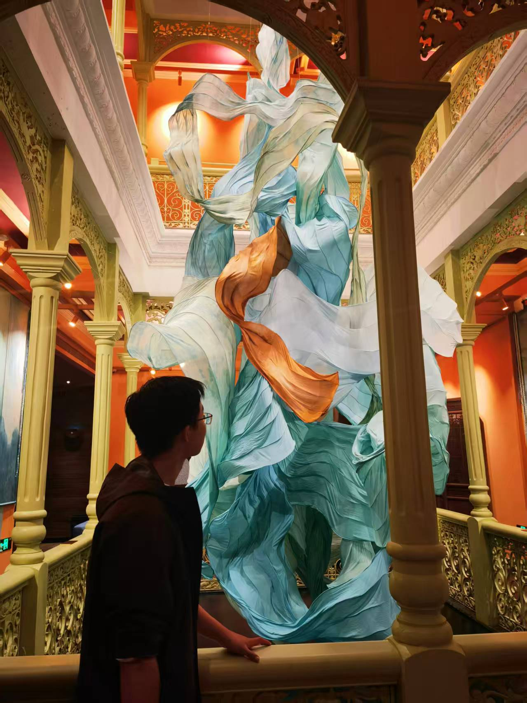
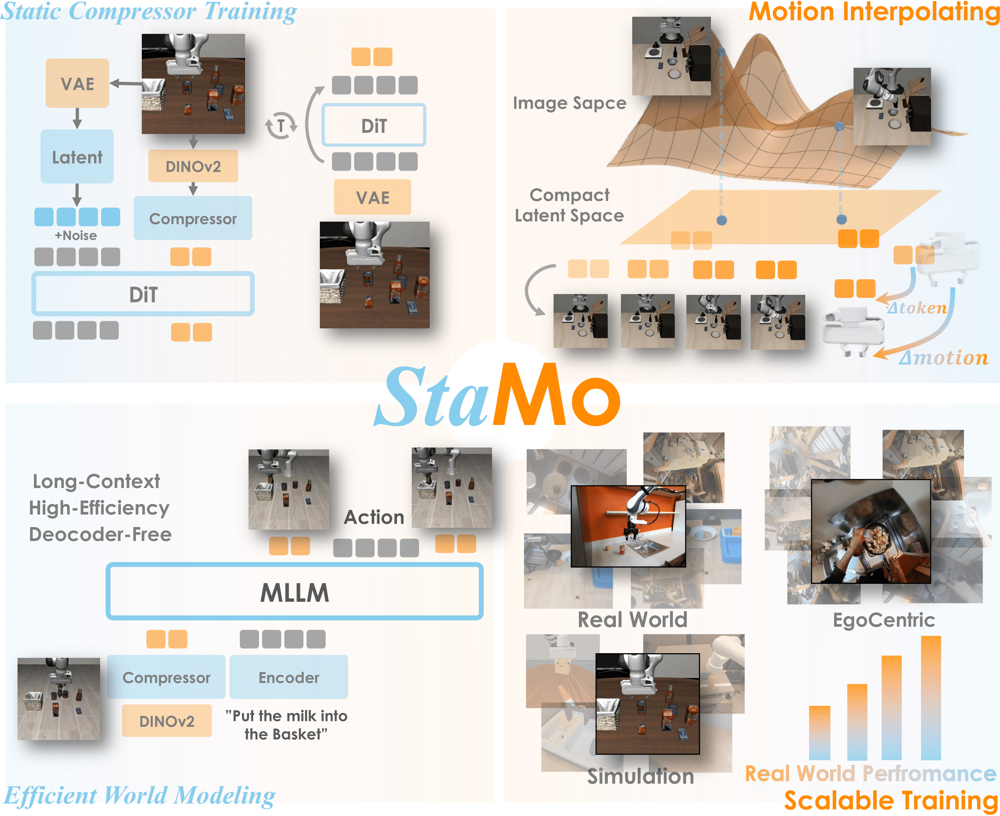

|
Zeju Li Email: zejuli [at] zju (dot) edu (dot) cn I'm a Computer Science undergraduate student at Zhejiang University, China, advised by Hao Chen and Chunhua Shen. Fascinated by movies like I Robot, Real Steel and Big Hero 6, I'm always passionate about developing truly intelligent robots, enabling general-purpose robot autonomy in human-centric environments. Google Scholar / CV (Feb 2026) / Twitter / Github / Blog |
 |
{kind=link}
NewsFeb 21, 2026 StaMo is accepted to CVPR-2026! 🎉 Nov 08, 2025 ODYSSEY is accepted to AAAI-2026 as an Oral Presentation! Oct 06, 2025 Introducing StaMo! Aug 11, 2025 Introducing ODYSSEY! |
Research
|

|
StaMo: Unsupervised Learning of Generalizable Robot Motion from Compact State Representation
Mingyu Liu*, Jiuhe Shu*, Hui Chen, Zeju Li, Canyu Zhao, Jiange Yang, Hao Chen†, Chunhua Shen† [project page] [arXiv] CVPR, 2026 Compact state representations for efficient world modeling and action learning. |

|
ODYSSEY: Open-World Quadrupeds Exploration and Manipulation for Long-Horizon Tasks
Kaijun Wang*, Liqin Lu*, Mingyu Liu, Jianuo Jiang, Zeju Li, Bolin Zhang, Wancai Zheng, Xinyi Yu†, Hao Chen†, Chunhua Shen† [project page] [arXiv] AAAI, 2026 [Oral Presentation] Language-guided long-horizon mobile manipulation with a benchmark. |
|
This page borrows designs from Jon Barron's website. |